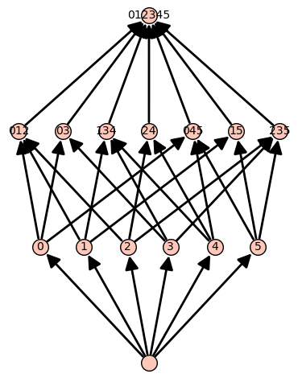

Lattices
We include a class called LatticeOfFlats, which is associated with a hyperplane arrangement. This class keeps track of basic information we need to compute the various generating functions associated with a hyperplane arrangement. (For non-central arrangements, this is indeed not a lattice, but a semi-lattice.) All other functions are tied to the LatticeOfFlats class and, thus, are either attributes or methods. Methods are written as .method_name.
LatticeOfFlats
Input:
- a hyperplane arrangement;
poset=None: the intersection poset of $\mathcal{A}$;flat_labels=None: a dictionary from the elements of the poset to subsets of atoms;hyperplane_labels=None: a dictionary from the atoms of the poset to the hyperplanes.
Output:
- the lattice of flats for the given hyperplane arrangement.
Unless the poset and labels have been computed before, they should not be given as this function may compute the intersection poset of a hyperplane arrangement faster than the default in SageMath.
Attributes
The lattice of flats has four attributes:
hyperplane_arrangement: the given hyperplane arrangement;poset: the intersection poset;flat_labels: the dictionary indexed by the elements ofposetwith values given by subsets of the atoms ofposet;hyperplane_labels: the dictionary indexed by the atoms ofposetwith values equal to the hyperplanes ofhyperplane_arrangement.
Example (Lattice of braid arrangement)
We construct the lattice of flats for the braid arrangement in $\mathbb{R}^4$.
sage: A = hi.CoxeterArrangement("A3")
sage: A
Arrangement of 6 hyperplanes of dimension 4 and rank 3
sage: L = hi.LatticeOfFlats(A)
sage: L
The lattice of flats of:
Arrangement of 6 hyperplanes of dimension 4 and rank 3
given by:
Finite poset containing 15 elements
Now we look at the data stored in the attributes. We display the hyperplanes in the arrangement.
sage: L.hyperplane_arrangement
Arrangement of 6 hyperplanes of dimension 4 and rank 3
sage: L.hyperplane_arrangement.hyperplanes()
(Hyperplane 0*x0 + 0*x1 + x2 - x3 + 0,
Hyperplane 0*x0 + x1 - x2 + 0*x3 + 0,
Hyperplane 0*x0 + x1 + 0*x2 - x3 + 0,
Hyperplane x0 - x1 + 0*x2 + 0*x3 + 0,
Hyperplane x0 + 0*x1 - x2 + 0*x3 + 0,
Hyperplane x0 + 0*x1 + 0*x2 - x3 + 0)
We display the poset as an image.
sage: L.poset
Finite poset containing 15 elements

Instead of showing the entire dictionaries, we will evaluate them at a few points.
sage: L.flat_labels[3]
{3}
sage: L.flat_labels[13]
{3, 5}
sage: L.flat_labels[9]
{1, 5, 6}
sage: L.flat_labels[0]
{}
We see that hyperplanes 1, 5, and 6 intersect in a codimension 2 subspace.
sage: L.hyperplane_labels[1]
Hyperplane 0*x0 + 0*x1 + x2 - x3 + 0
sage: L.hyperplane_labels[5]
Hyperplane x0 + 0*x1 - x2 + 0*x3 + 0
sage: L.hyperplane_labels[6]
Hyperplane x0 + 0*x1 + 0*x2 - x3 + 0
.atoms
Output:
- the atoms of the underlying poset.
.deletion
Input:
- a hyperplane $H$.
Output:
- the lattice of flats associated to the arrangement without $H$.
Example (Deletion in the braid arrangement)
We continue the $\mathsf{A}_3$ example started above. We will delete the hyperplane labeled by $2$ and display the resulting lattice of flats.
sage: L.deletion(2)
The lattice of flats of:
Arrangement of 5 hyperplanes of dimension 4 and rank 3
given by:
Finite poset containing 13 elements

.labels_of_flats
Output:
- the list of tuples with first entry an element of the poset and second entry a subset of atoms.
.labels_of_hyperplanes
Output:
- the list of tuples with first entry an element of the poset and second entry a hyperplane.
.Poincare_polynomial
Output:
- the Poincaré polynomial of the hyperplane arrangement.
.proper_part_poset
Output:
- the subposet without $\hat{0}$ and $\hat{1}$.
.show
No output given. This displays the underlying intersection poset using the default options in SageMath. This is a shortcut for L.poset.show().
.subarrangement
Input:
- an integer $x$.
Output:
- the lattice of flats of the interval $[\hat{0}, x]$.
Example (Subarrangement of the braid arrangement)
We continue from the original $\mathsf{A}_3$ example started above. We will construct the subarrangement from the flat labeled $10$.
sage: L.subarrangement(10)
The lattice of flats of:
Arrangement <x1 - x2 | x0 - x1 | x0 - x2>
given by:
Finite poset containing 5 elements

.restriction
Input:
- an integer $x$.
Output:
- the lattice of flats of the restriction to $x$ in the poset.
Example (Subarrangement of the braid arrangement)
We continue from the original $\mathsf{A}_3$ example started above. We will construct the restriction from the flat labeled $3$.
sage: L.restriction(3)
The lattice of flats of:
Arrangement <-x0 + x1 | x1 | x0>
given by:
Finite poset containing 5 elements